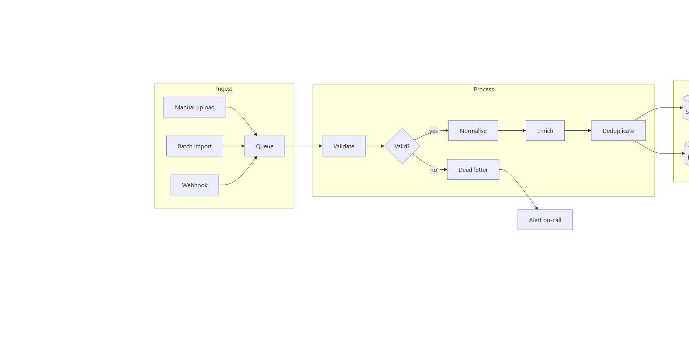
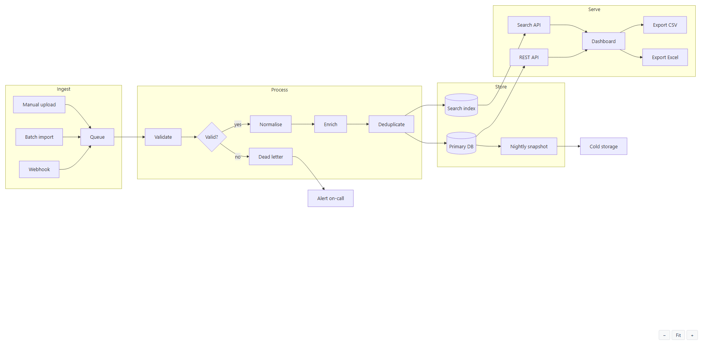

Documentation
Mermaid SVG Diagrams for Confluence
Start here
Adding your first diagram takes about a minute. There is nothing to set up first.
- Edit any Confluence page.
- Type /Mermaid and choose Mermaid Diagram from the list.
- The macro opens a panel with a single text box. Paste your Mermaid text into it — or take one of the examples below to start with.
- Press Save. The diagram is drawn immediately, inside the editor.
- Publish the page. Readers see the same diagram, at the same size.
A macro you have just inserted already shows a sample diagram. That is deliberate: you can see the app working before you have written anything. Open the configuration and replace the sample with your own text — it is not a template you have to fill in, and there is no step between typing and saving.

Diagrams to copy and paste
Every example below is plain Mermaid and renders with the version of Mermaid this app ships. Paste one into the macro, press Save, then change the labels to yours.
Flowchart
flowchart TD
A[Request arrives] --> B{Signed in?}
B -- no --> C[Send to login]
B -- yes --> D[Load the page]
D --> E[Done]Sequence diagram
sequenceDiagram
participant R as Reader
participant C as Confluence
participant M as Macro
R->>C: opens the page
C->>M: renders the macro
M-->>R: SVG diagramGantt chart
gantt
title Release plan
dateFormat YYYY-MM-DD
section Build
Write the code :done, a1, 2026-09-01, 7d
Review :active, a2, after a1, 3d
section Ship
Publish :a3, after a2, 2dClass diagram
classDiagram
class Page {
+String title
+publish()
}
class Macro {
+String source
+render()
}
Page "1" --> "0..*" Macro : containsEntity relationship diagram
erDiagram
TEAM ||--o{ PAGE : owns
PAGE ||--o{ DIAGRAM : contains
DIAGRAM {
string source
string type
}State diagram
stateDiagram-v2
[*] --> Draft
Draft --> InReview : submit
InReview --> Draft : changes requested
InReview --> Published : approve
Published --> [*]Writing the diagram
The first line has to say which kind of diagram it is — flowchart TD,
sequenceDiagram, classDiagram, gantt, and so on. That first line is the
single most common thing to lose when copying from somewhere else, and without it nothing can be drawn.
Mermaid's own documentation lists every diagram type and every option; this app renders whatever that version of Mermaid renders, with no additions and no restrictions of ours.
Zoom and full screen
Hover over a diagram and a small bar appears at its bottom right: −, Fit, + and Full screen. The steps are half, three quarters, actual size, and then one and a half, two, three and four times. Fit returns the diagram to the width of the page column. Above actual size the diagram scrolls inside its own box rather than pushing the page sideways.
Zoom multiplies the size you are currently seeing, not the diagram's natural size. On a wide diagram already shrunk to fit the column, that is what makes − visibly do something.
Full screen opens the same diagram in a dialog the size of the window, with the same bar. It is a dialog rather than the browser's own full-screen mode because Confluence does not let an app take over the screen; nothing about the diagram changes, only the room it has.

Width, printing and dark mode
The diagram is drawn as SVG at the width it actually needs, and is only ever scaled down to fit a narrower column — never stretched up to fill one. Because it is vector, it stays sharp when you zoom, when the page is printed, and on a high-resolution screen.
The background is transparent and the diagram follows the Confluence theme, so in dark mode it sits on the page colour instead of on a white rectangle. Switching the theme redraws the diagram without reloading the page.
Inside expand and include page
A diagram works inside a collapsed Expand macro, inside an Include page, and with the two nested. It is drawn when the container opens, at the width it then has.
When something does not look right
The macro still shows the sample diagram
The text box was empty when it was saved. An empty box is a legitimate choice — it puts the macro back to its sample state rather than saving a blank diagram. Open the configuration, paste your text, and save again.
A message about the first line
The first line has to say which kind of diagram this is —
for example: graph TD, sequenceDiagram, gantt, classDiagram.
The text was pasted without its opening line. Add flowchart TD (or the type you meant) as the first
line. This is what you get when a diagram is copied from a chat window or a document that dropped it.
A line number and a marker
Line 3 could not be read.
...sing brace B --> C[Never drawn]
----------------------^A syntax error. The marker sits under the character Mermaid stopped at — usually an unclosed bracket or quote a line or two earlier. The parser's list of expected tokens is deliberately not shown: it names symbols of the grammar, not anything you typed.
The diagram looks small
It is being fitted to the width of the page column. Use + to enlarge it in place, or Full screen to open it in a dialog the size of the window. Nothing is lost at any size: it is vector, not a picture.
A notice instead of the diagram
The site has no active subscription. Your text is untouched and reappears as soon as the subscription is active — see Licence below.
The first diagram on a page takes a moment
The Mermaid engine is fetched once, then cached by the browser and reused. The first diagram after a browser cache is cleared pays for that fetch; the ones after it do not, and several diagrams on the same page share the work rather than repeating it.
Licence
Sites with up to 10 users are free. On a site with no active subscription the macro shows a short notice in place of the diagram; your text is untouched and reappears as soon as the subscription is active. Subscriptions are managed by Atlassian, from the app's Marketplace listing or your site's Apps administration.
What it does not do
- It is not a drawing tool. You write Mermaid; there is no canvas and no shape palette. If you want to drag boxes, draw.io and Gliffy do that and this does not.
- It does not render PlantUML or other diagram languages. Mermaid only.
- The diagram text is not indexed by Confluence search. Searching for a label inside a diagram will not find the page.
- No AI generation. The diagram is what you wrote.
- Confluence, not Jira.
Where your text goes
Nowhere. The diagram is drawn in the reader's browser, by a copy of Mermaid served as part of the app. The macro holds no server of ours, makes no outbound call, and asks Confluence for no permission at all: your text stays inside your Atlassian site, saved in the page like any other content. This is what the Runs on Atlassian badge on the listing attests.
Support
Open a ticket, or write to support@softyways.com. Include your Confluence site URL and, if a diagram will not draw, the diagram text itself — it is almost always reproducible from the text alone.